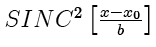

The sinc2 function is the squared sinc function. Note that sinc2[x] varies smoothly in the vicinity of its zeros, unlike |sinc[x]|.

Parameters:
Support: infinite
Area: 1 (evaluated via integration in the complex plane using Cauchy's theorem)
Symmetry: even